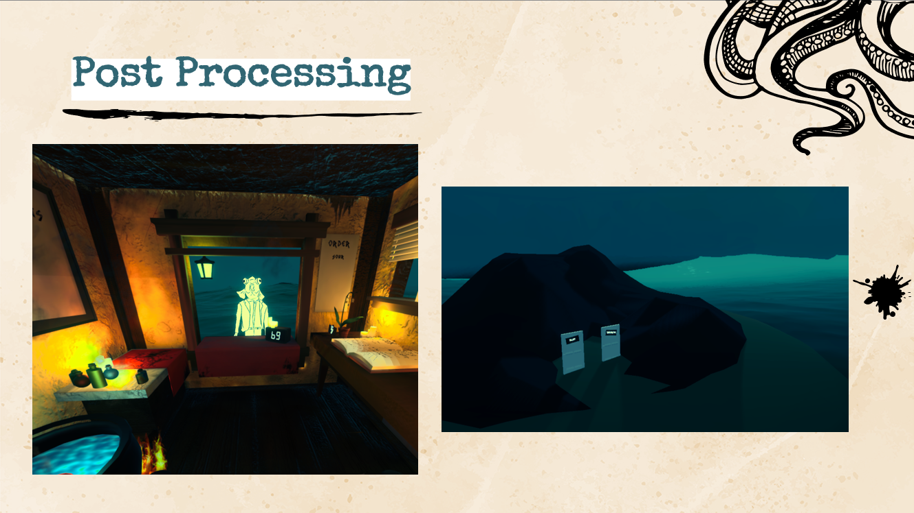
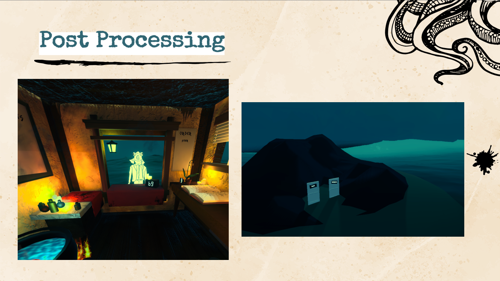

Lulu's
Tools: Unity (C#), Meta VR/XR Interaction SDK, Blender, Maya, Substance Painter
Description: Welcome to Lulu's...You've been captured by Cthulu's curse and forced to cook for him at his creepy restaurant in the ocean, Lulu's. It's a challenge to keep yourself sane while you satisfy the customer's orders, all the while making sure to poison some of them based on Cthulhu's requirements. Have fun...
Lulu's was made during the Original Game Round (2 weeks) at the CMU Game Academy in 2024. It was a complete process from prototyping, pitching, art direction, to programming and presenting our final product. We went through many iterations of what the kitchen would look like, and how players would interact with a kitchen within VR without having to walk too far. To fit into the time crunch, we modeled in low resolution while textured the models in high resolution; and we focused on post processing for aesthetic purposes. Programming for a VR game was challenging as neither I nor the other programming had previous experience. However, while playing around with Meta's VR SDK, we discovered a lot of premade things like virtual hands to be utilized much easier. Within the 2 weeks, we had to also consider the user experience, and consider what was most intuitive to simulate cooking, while also what was easier to implement. Overall, it was a wonderful experience working in such a motivating environment while learning how to use a new medium.
Role: Producer and Lead Engineer
Credits: Jason Chen, Ana (Yun Han) Jiang, Britney Yang, Mia Liu, Pierre (Yi Zhi) Chen
Github: Lulu's Github